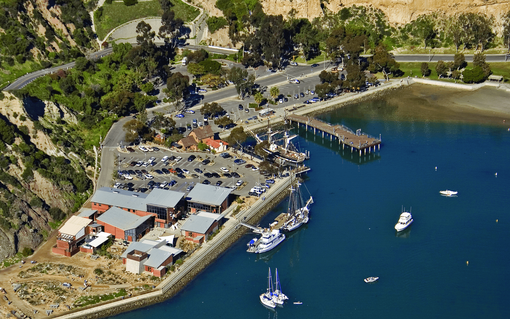

Series creator Stephen Hillenburg first became fascinated with the ocean as a child and began developing his artistic abilities at a young age. Although these interests would not overlap for some time—the idea of drawing fish seemed boring to him—Hillenburg pursued both during college, majoring in marine biology and minoring in art. After graduating in 1984, he joined the Ocean Institute, an organization in Dana Point, California, dedicated to educating the public about marine science and maritime history.
While Hillenburg was there, his love of the ocean began to influence his artistry. He created a precursor to SpongeBob SquarePants: a comic book titled The Intertidal Zone used by the institute to teach visiting students about the animal life of tide pools. The comic starred various anthropomorphic sea lifeforms, many of which would evolve into SpongeBob SquarePants characters. Hillenburg tried to get the comic professionally published, but none of the companies he sent it to were interested. A large inspiration to Hillenburg was Ween's 1997 album The Mollusk, which had a nautical and underwater theme. Until his death in 2018, Hillenburg had served as the executive producer over the course of the series' entire history and functioned as its showrunner from its debut in 1999 until 2004. The series went on hiatus in 2002, after Hillenburg halted production on the show itself to work on the feature film The SpongeBob SquarePants Movie. Once the film was finalized and the third season finished, Hillenburg resigned as the series' showrunner. Although he no longer had a direct role in the series' production, he maintained an advisory role and reviewed each episode. When the film was completed, Hillenburg intended it to be the series finale, "so [the show] wouldn't jump the shark." However, Nickelodeon wanted more episodes. Hillenburg appointed Paul Tibbitt, who had previously served on the show as a writer, director, and storyboard artist, to take over his role as showrunner to produce additional seasons. Hillenburg considered Tibbitt one of his favorite members of the show's crew, and "totally trusted him". On December 13, 2014, it was announced that Hillenburg would return to the series in an unspecified position. On November 26, 2018, at the age of 57, Hillenburg died from complications from amyotrophic lateral sclerosis (ALS), with which he had been diagnosed in March 2017. Nickelodeon confirmed via Twitter the series would continue after his death. In February 2019, incoming president Brian Robbins vowed Nickelodeon would keep the show in production for as long as the network exists. As of the ninth season, former writers and storyboard directors Vincent Waller and Marc Ceccarelli act as showrunners. Hillenburg is still posthumously credited as executive producer in episodes as of 2024.